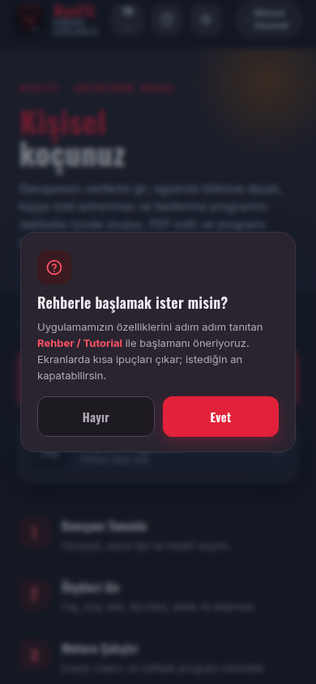
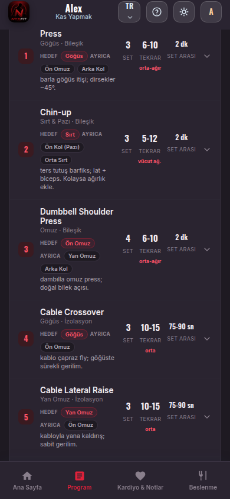
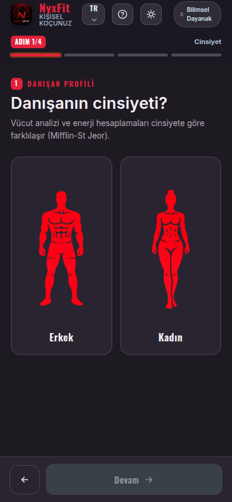
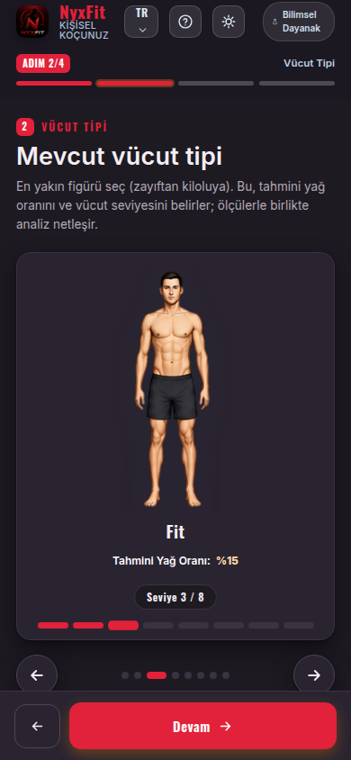
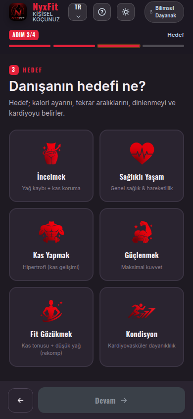
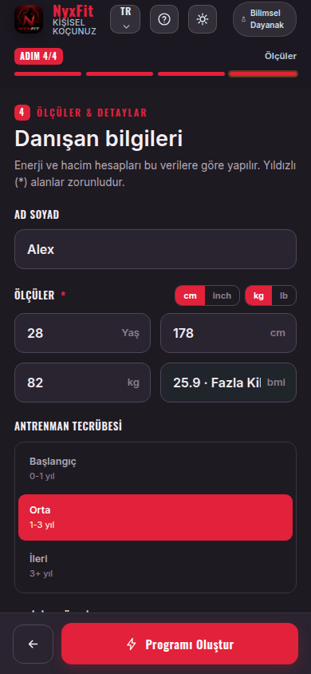
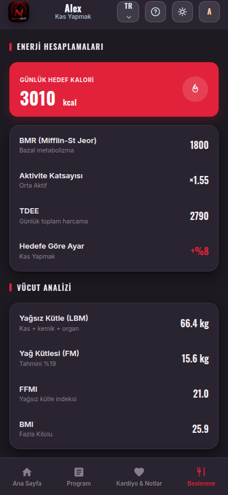
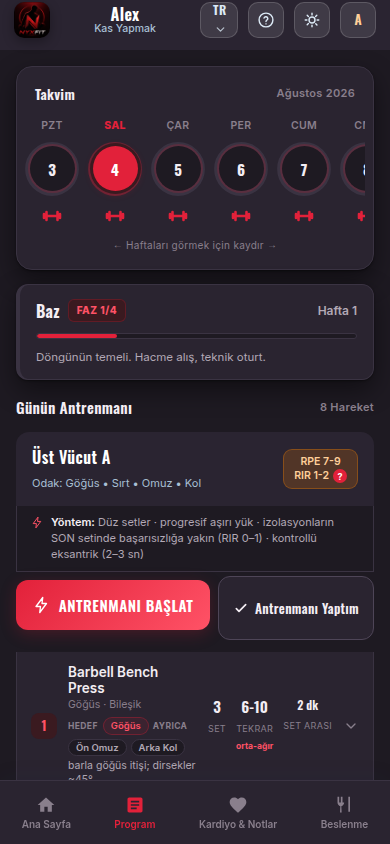
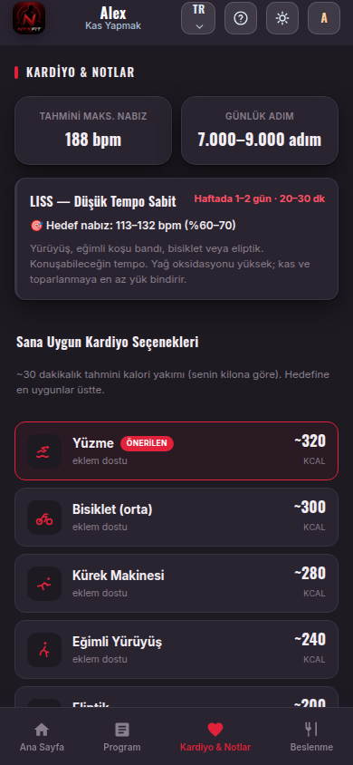
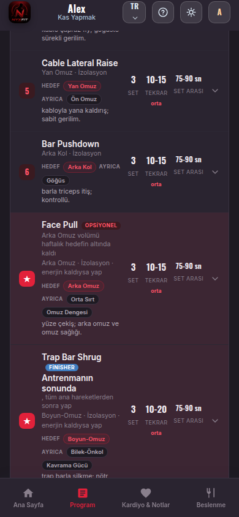

Hazır program değil.Sana özel üretilmiş program.
Çoğu uygulama hazır programları listeler; hangisini seçersen seç, o plan onu açan herkes için aynıdır. NyxFit liste açmaz. Yaşını, kilonu, yağ oranını, deneyimini, ekipmanını ve varsa sakatlığını okur; kalorini, makrolarını, haftalık set hacmini ve hareket seçimini o anda hesaplar.
Sonuç tek bir ekran değil: günlük beslenme hedeflerin, gün gün antrenman planın, kardiyo dozun, ilerleme takip tablon ve danışanına verebileceğin PDF raporun birlikte gelir.



Cinsiyet, mevcut vücut tipi ve hedefle başla. Vücut tipi seçimi yağ oranı tahminini ve planın yönünü belirler.
Yaş, boy, kilo, deneyim, haftalık gün sayısı, ekipman ve varsa sakatlık bilgisi. Birkaç dakika sürer.
Enerji ihtiyacın, makroların, haftalık set hacmin ve sana uygun hareketler aynı anda belirlenir.




Rakamlar senin için hesaplanır
Yaş, boy, kilo ve cinsiyetinden günlük enerji ihtiyacın çıkarılır. Vücut tipin ve yağ oranın kalorinin yönünü belirler: açık mı verilecek, fazla mı, yoksa koruma mı.
Yağ oranı yüksek biri kas yapmak istediğinde uygulama doğrudan kalori fazlası vermez — planı rekompozisyona çevirir ve bunu ekranda gerekçesiyle açıklar. Yağ kaybederken kas geliştirmenin yolu budur.

Makrolar ve günlük hedefler
Protein, karbonhidrat ve yağ dağılımı hedefine ve vücut kompozisyonuna göre ayrılır. Kalori açığındayken protein yağsız kütle üzerinden hesaplanır — kas kaybını en aza indiren yaklaşım budur.
Günlük lif ve su hedefi, öğün başına düşen protein miktarı ve sana özel beslenme notları planla birlikte gelir.
Haftalık plan, gün gün
Kaç gün çalışacağını söylersin; uygulama antrenman bölünmesini (tüm vücut, üst/alt, itme-çekme-bacak) buna göre kurar ve her günün odağını belirler.
Her hareketin seti, tekrar aralığı ve dinlenme süresi yazılıdır. Hareketin altındaki tek cümlelik teknik notu ne yapman gerektiğini söyler; RPE ve RIR hedefi her gün için ayrıca belirtilir.

Günler ve hedef bölgeler
Antrenman günleri sekmeler halinde sıralanır; hangi günün hangi bölgeyi çalıştırdığını tek bakışta görürsün.
Bir bölgeyi öne çıkarmak istersen işaretlersin, dengeyi bozmadan o kas grubuna ek hacim verilir. Sakatlık bildirdiğin bölgeyi zorlayan hareketler ise programa hiç girmez.

Beğenmediğin hareketi değiştir
Aletler doluysa, hareket sana uymuyorsa ya da bir yerini acıtıyorsa alternatif listesini açarsın. Aynı kası ve aynı hareket paternini çalıştıran, ekipmanına uyan seçenekler listelenir.
Seçtiğin anda set, tekrar ve dinlenme süresi yeni harekete göre uyarlanır; PDF ve antrenman kaydı da güncellenir. İstediğin zaman önerilen harekete geri dönebilirsin.

Antrenman sırasında yanında
Telefonu açar, setleri tek tek işaretlersin. Kaldırdığın ağırlığı ve tekrarı girersin; dinlenme sayacı kendiliğinden başlar.
Girdiğin veriler bir sonraki haftanın önerisine dönüşür: üst tekrar sınırına ulaştıysan yükü artırman önerilir; deload haftasındaysan azaltılmış ağırlık gösterilir.
4 haftalık döngü: üç hafta kademeli birikim, zirve haftası, ardından deload. Uygulama kaçıncı haftada olduğunu bilir ve yükü kendisi ayarlar.
12 hafta boyunca kilo, bel, göğüs, kalça, yağ oranı, enerji, uyku ve performans kaydedilir; ilk haftaya göre değişim grafiğe işlenir.
Profil analizi, kalori ve makro dağılımı, haftalık plan, kardiyo planı ve takip tablosu tek dosyada. Danışanına verebileceğin profesyonel çıktı.
Her danışanın programını ve ölçüm geçmişini ayrı ayrı saklarsın; listeden dokunarak açar, günceller ya da silersin.
Kalori, protein, hacim, dinlenme… her sayının dayandığı bilimsel çalışmayı uygulama içinde görebilirsin.
Veriler cihazında kalır. Yedeği tek dokunuşla alır, yeni telefonda geri yüklersin. Hesap yok, bulut yok.
Deutsch
Üç dil tam destekli: arayüz, antrenör notları, beslenme açıklamaları, 309 hareketin tekniği ve bilimsel dayanak metinleri. Üst bardaki dil butonuyla anında geçiş yaparsın; kayıtlı programların ve ölçümlerin korunur.
Verilerin cihazında kalır. Hesap açmak yok, buluta yükleme yok — yedeğini istediğin an kendin alırsın.